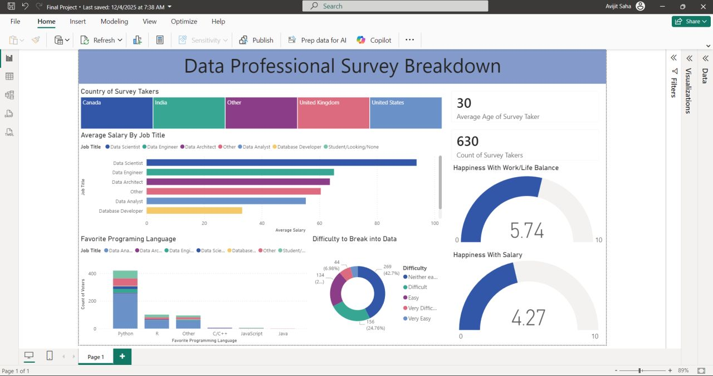
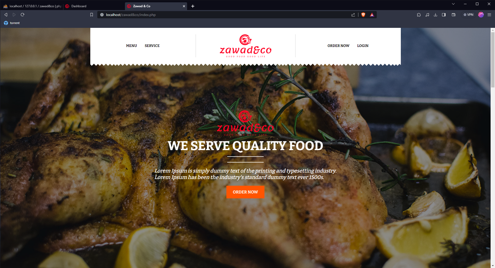

Projects

An end-to-end Power BI BI solution analyzing global data professional surveys. Features custom ETL pipelines via Power Query, complex DAX measures for salary/satisfaction metrics, and interactive storytelling visuals.

Dynamic web platform built with Laravel, replacing a legacy WordPress installation. Features integrated REST APIs and a modern, responsive front-end architecture.

Designed a blockchain-powered system for end-to-end traceability and quality assurance in the prawn supply chain, ensuring data integrity at each step.

Web-based ordering and management system for a university canteen. Streamlines the ordering process with a clean UI and robust backend.
Built a comprehensive system to track and monitor student academic progress through assessments, enabling data-driven decisions by faculty and administration.